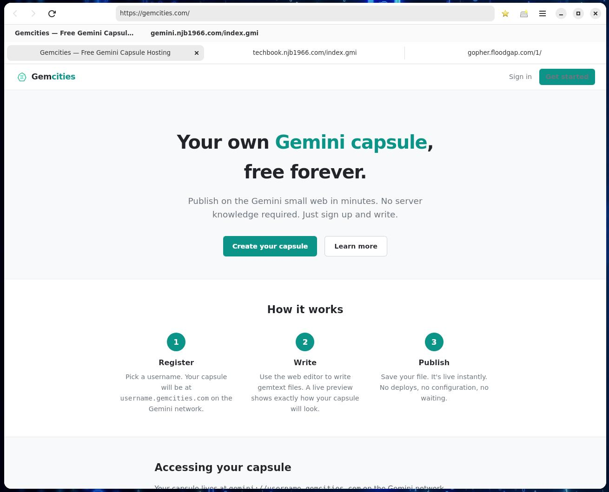
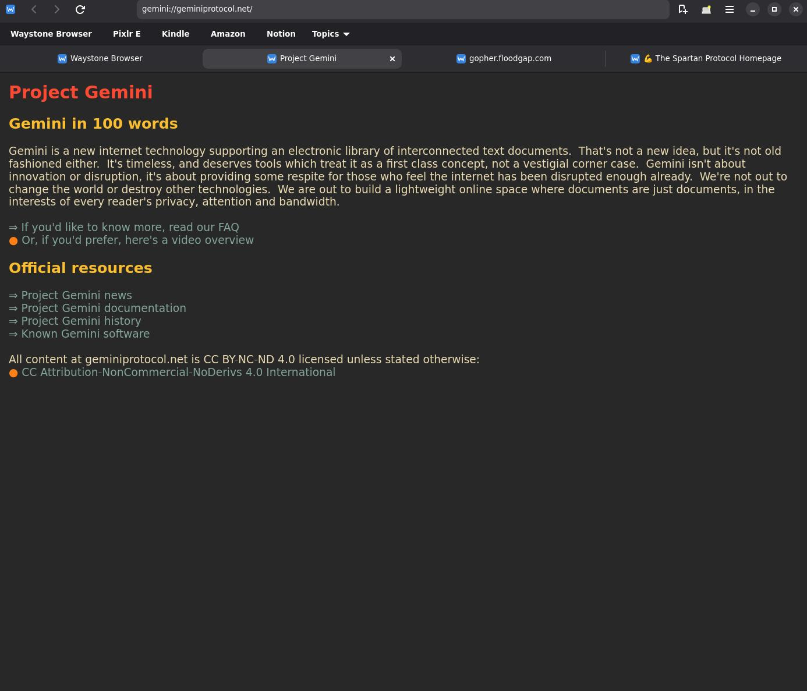
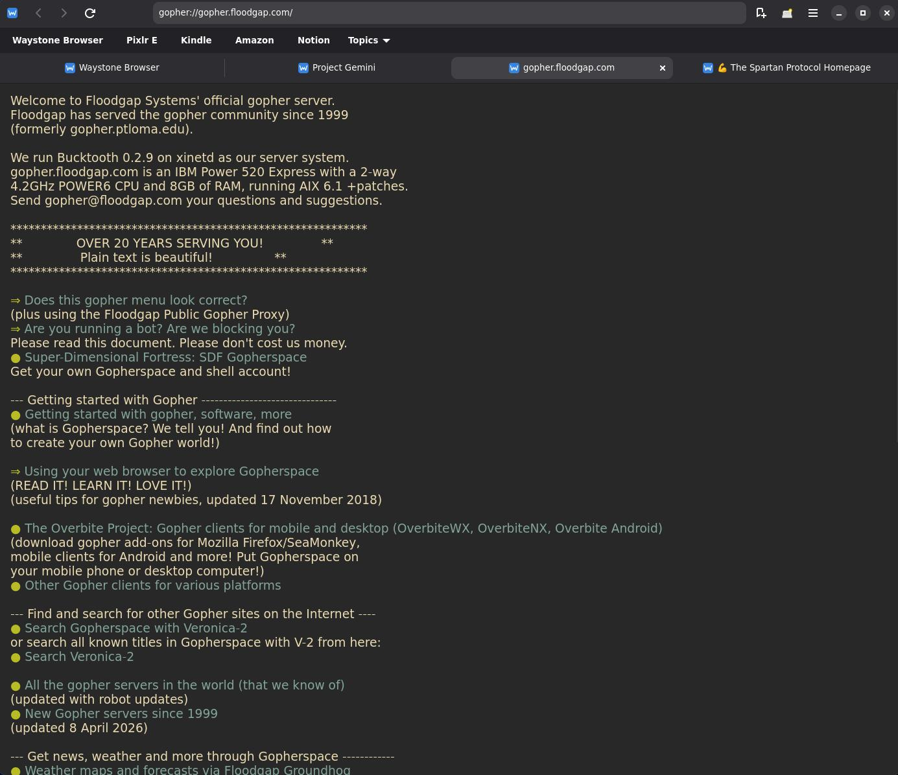

Find your path with Waystone.
Waystone Browser is a graphical browser for exploring the modern web alongside Gemini and Gopher in one place. For project details, screenshots, build information, and source code, visit the GitHub repository.

HTTP / HTTPS

Gemini

Gopher
About Waystone Browser
Waystone is a multi-protocol graphical browser for Linux that lets you navigate the modern web, Gemini-space, and Gopherspace from a single application. Built with Python, GTK 4, Libadwaita, and WebKitGTK — it feels at home on any GNOME desktop.
Protocol Support
- HTTP / HTTPS — Full web engine via WebKitGTK; JavaScript on by default with a global toggle in Settings.
- Gemini — Native gemtext renderer with TOFU certificate trust, redirect handling, and input prompts (status 10 / 11).
- Gopher — Menu and text rendering, type-7 search dialogs, and binary file download with Save As.
Features
- Tabbed browsing — open, close, and cycle tabs (Ctrl+T / Ctrl+W / Ctrl+Tab)
- Bookmarks with folder organisation and a Bookmarks Bar
- Searchable history, auto-recorded per navigation
- Find in page — Ctrl+F with live match highlighting
- Dark / Light / System colour scheme, applied immediately
- Per-tab zoom for web tabs (Ctrl+= / Ctrl+− / Ctrl+0)
- Open in new tab —
target="_blank"and middle-click - Print support for web tabs (Ctrl+P)
Keyboard Shortcuts
- Alt+Left / Alt+Right — Back / Forward
- F5 / Ctrl+R — Reload | Ctrl+Shift+R — Hard reload
- Ctrl+L — Focus address bar
- Ctrl+D — Bookmark / unbookmark current page
- Ctrl+B — Bookmarks manager | Ctrl+H — History
- Ctrl+Shift+B — Toggle Bookmarks Bar
Getting Started
Requires Debian / Ubuntu with the following system packages:
python3-gi gir1.2-gtk-4.0 gir1.2-adw-1
gir1.2-webkit-6.0 python3-aiosqlite
Clone the repository and run ./run.sh, or install system-wide
with pip install --user .. A Flatpak manifest is also provided
for sandboxed installation on any Linux desktop.
Full documentation, releases, and source code are on GitHub.
Data & Settings
- Bookmarks, history, and TOFU certs —
~/.local/share/waystone/waystone.db - Settings (homepage, JS, colour scheme) —
~/.config/waystone/settings.json - TOFU fingerprints viewable and removable in Settings → Gemini